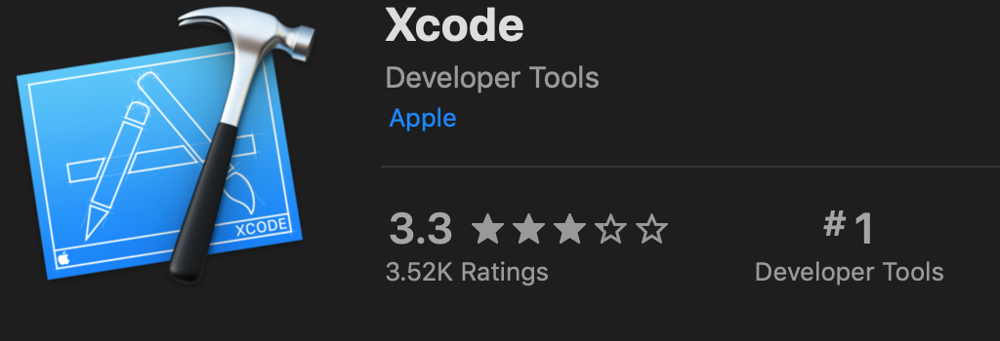
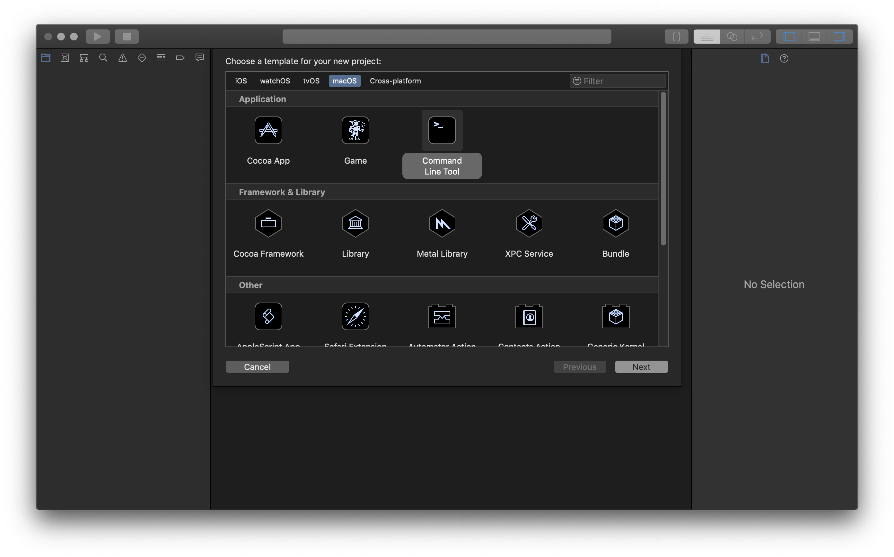
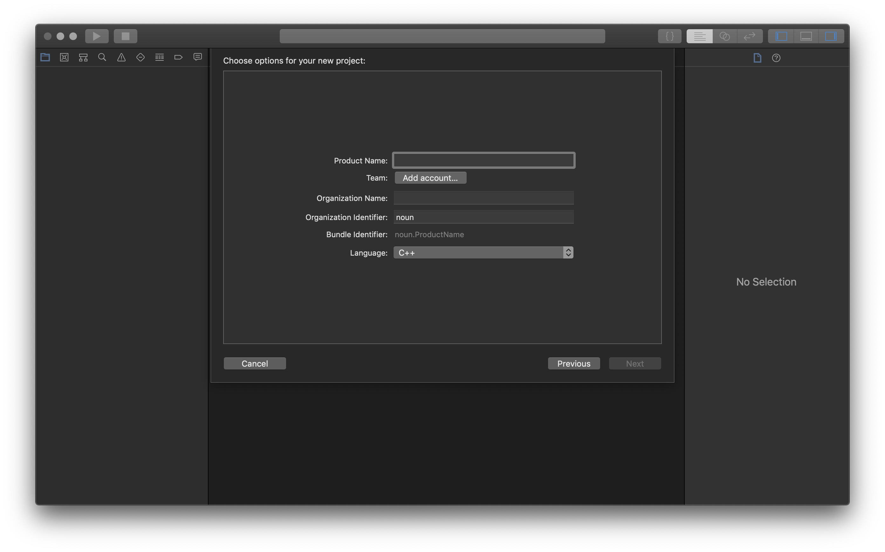
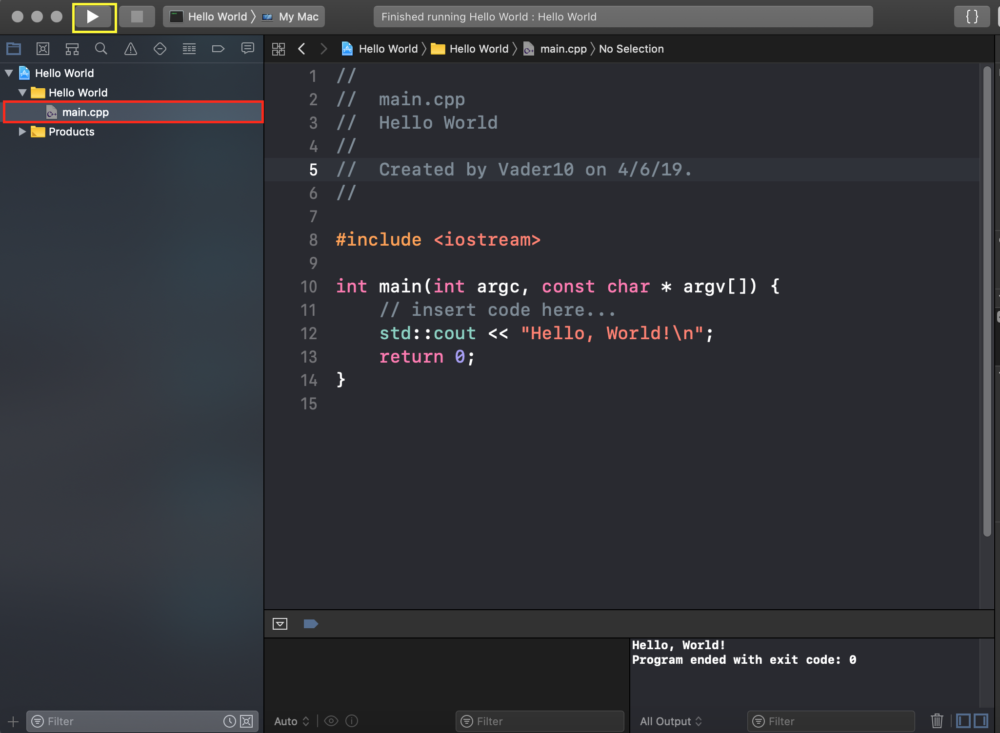
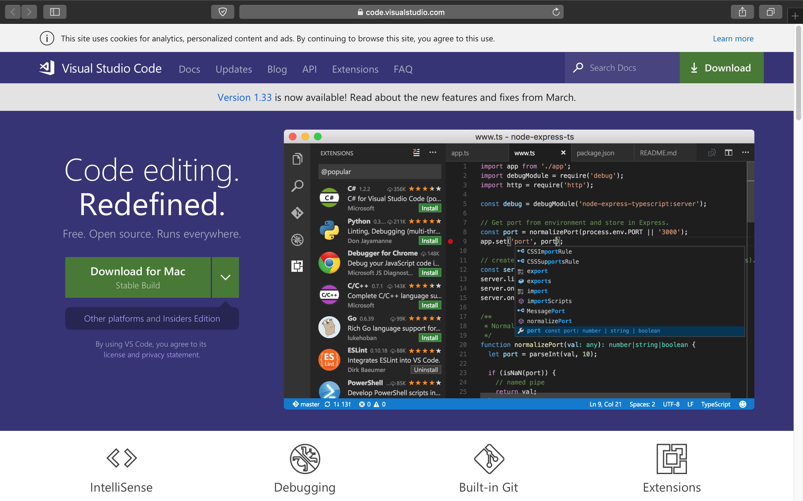
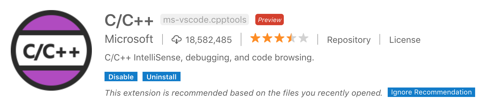

到 App Store 找到 Xcode， 然后下载它
1.首先，打开 Xcode。你应该会看到一个这样的页面：

如果你没看到这个窗口，用快捷键 Shift+Cmd+N， 然后跳到第三步。
2.之后，点击“Create a new Xcode project” 或 用快捷键 Shift+Cmd+N。
3. 点击 "MacOS" 然后点击 "Command Line Tool." 点击 "Next".
4. 输入作品的名称让后选择“C++”.
5. 点击“main.cpp”（红长方形），开始敲代码。敲完了的时候， 点击"build and then run the current scheme"（黄色长方形里的三角形）来编译运行。
Xcode 不能编译运行单个文件，但VS Code 可以。
1. 首先，访问 https://code.visualstudio.com 然后下载VS code.
2. 然后，下载“C/C++”和“C/C++ compile run

3. 最后，打开一个新的文件并用快捷键”Cmd+R“编译运行它。
访问次数：